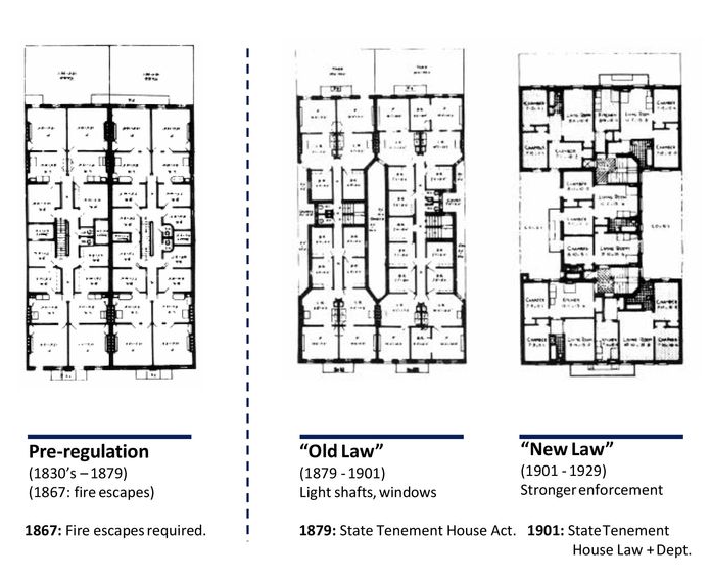
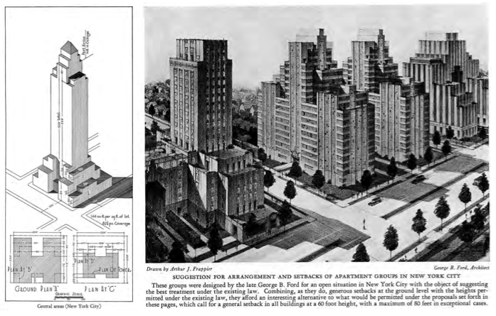
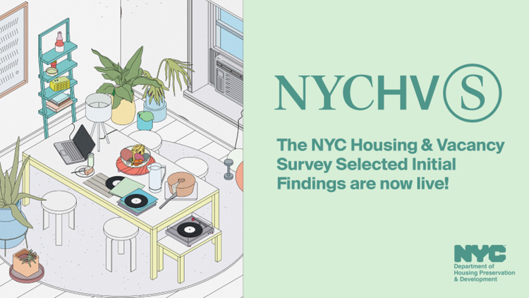

Welcome to NYC Housing Reports
Data From the Housing Reports
This is a overview report of New Yorkers complain reports about their place.
For more reliable info you can check the filter,map,graph page.

This is a overview report of New Yorkers complain reports about their place.
For more reliable info you can check the filter,map,graph page.

Tenement House Commission Report (1900) — Exposed dangerous living conditions in NYC tenements and sparked reforms that transformed urban housing standards.

Regional Plan of New York (1929) — A visionary blueprint that shaped how New York City and its suburbs would grow throughout the 20th century.

NYC Housing and Vacancy Survey (1965–Present) — The city's housing "pulse check," tracking shortages, rents, and vacancy rates that influence policy decisions.

Housing and Development Administration Reports (1950s–1970s) — Guided massive urban renewal projects that reshaped entire neighborhoods, for better and worse.